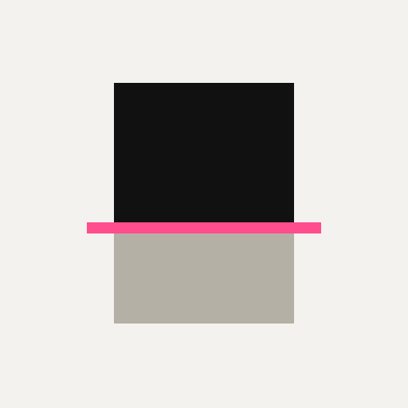
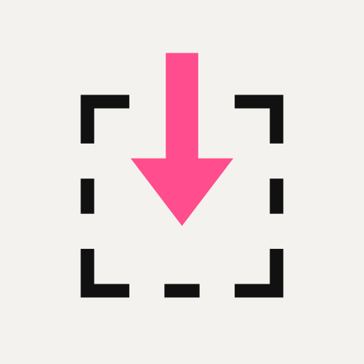
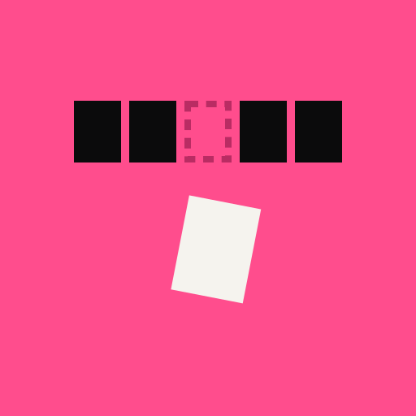
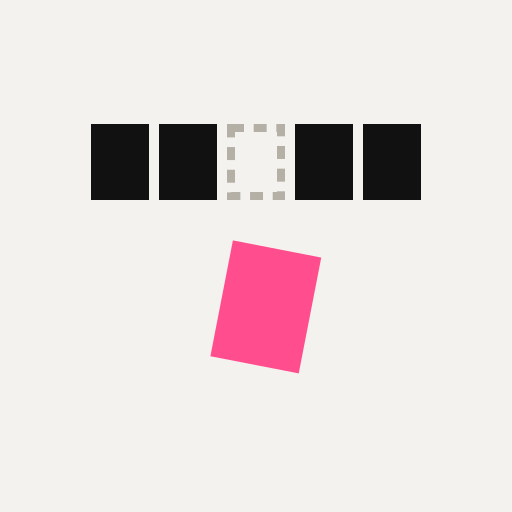
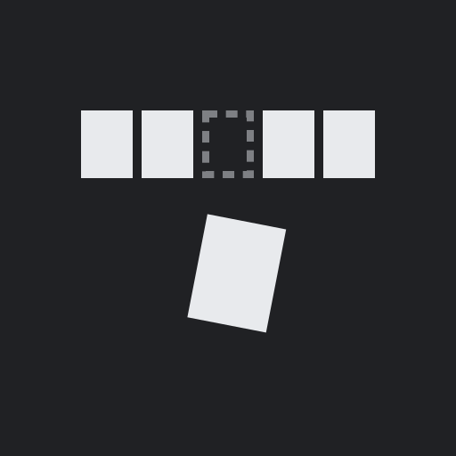
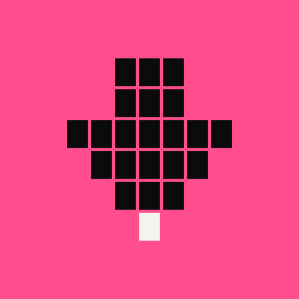
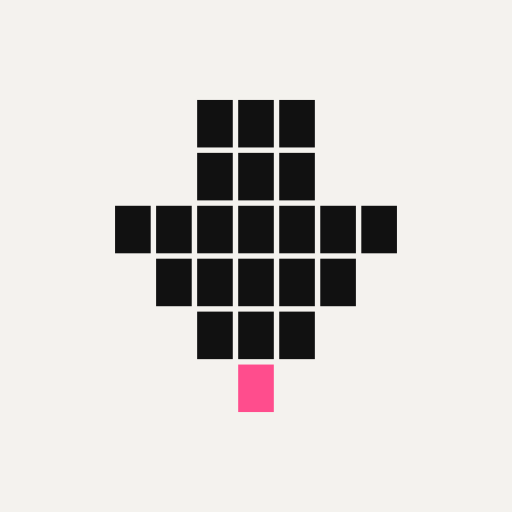
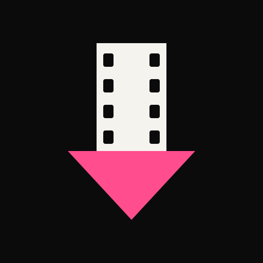

16Arriving frame
One picture, half arrived. The download screen as a sign.

The app is built on frames: the empty one on Home, the wall of them in the library.
One picture, half arrived. The download screen as a sign.

The empty frame of the Home screen, with something coming in.


A row of frames out there. The one you picked comes down to you, in colour.



The library wall, arranged as an arrow.



A strip of film that ends in a point.